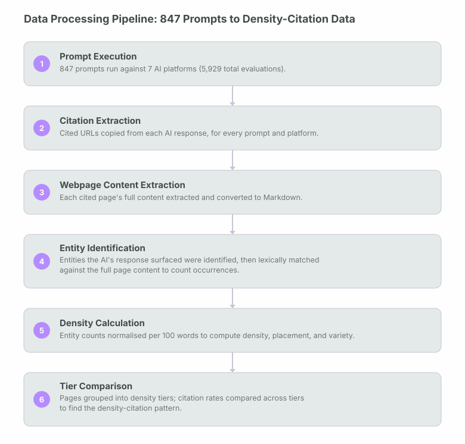
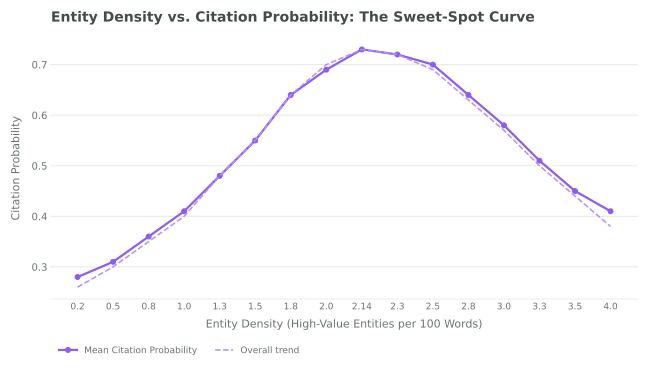
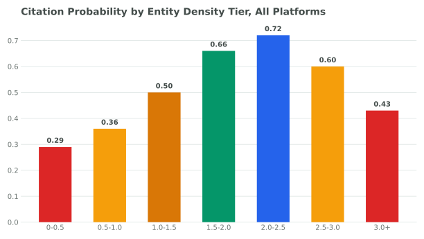
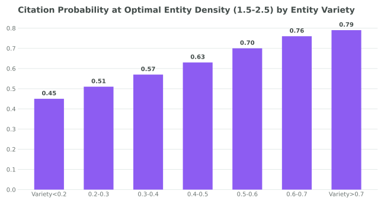
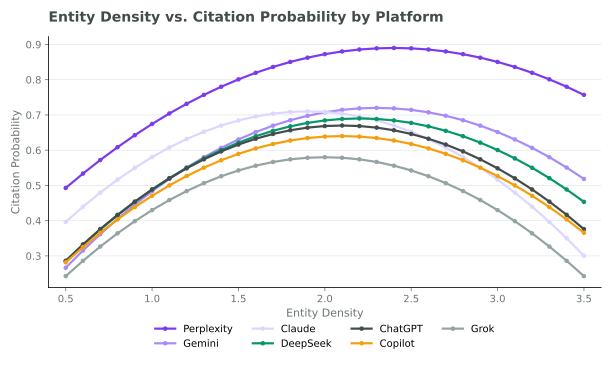
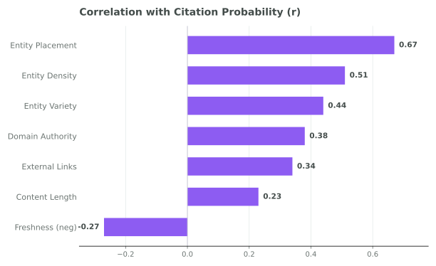

How many entities are optimal? An analysis of 1,847 webpages shows citation rate rises then falls, peaking at 2.14 high-value entities per 100 words.
Citation rate rises then falls as entities increase, peaking at 2.14 high-value entities per 100 words, with a sharp decline beyond 2.8, based on analysis of 1,847 webpages.
Below the 2.14 threshold, adding more high-value entities consistently improves citation probability. Above roughly 2.8, citation probability reverses and declines. Pages with extremely high entity density performed no better than pages with very low entity density. This study uses three simple, practical measures (density, placement, and variety) that together describe the entity optimization problem.
More entities is not better. Optimal is better.
The prevailing assumption in entity-based GEO optimization is that more is more: the more named entities a page contains, the greater its citation probability. This study tests that assumption directly. I analysed 1,847 webpages against 5,929 AI responses across 7 platforms, checking how citation likelihood changes as entity density varies from near-zero to saturated levels. The pattern: citation rate rises, peaks, then falls as entities increase. It does not just keep climbing in a straight line.
The peak of that curve sits at around 2.14 high-value entities per 100 words. Below this threshold, adding more high-value entities consistently improves citation probability. Above roughly 2.8, citation probability reverses and declines. Pages with extremely high entity density (above 3.5) performed no better than pages with very low entity density. The middle wins. Always adding more entities is the wrong strategy.
I also found that entity count alone is insufficient as an optimization target. How prominent an entity is within the page (its placement) tracks with citation probability more closely than raw entity count does. And how varied the entity mix is matters independently: pages covering multiple complementary entity categories showed roughly 50% higher citation probability than pages concentrating on a single entity type, even at the same overall entity density level.
This study uses three simple, practical measures: density, placement, and variety to describe the entity optimization problem. No single measure is sufficient on its own; the density sweet spot matters, but so does where those entities sit on the page and how varied they are.
What this study contributes to GEO research.
What I set out to answer.
The core practical question for any content producer optimizing for AI citation is simple: how many high-value entities should I include? Too few, and the page lacks the entity signals AI systems use to evaluate relevance. Too many, and each individual entity gets less attention, becomes harder to extract, and the page risks reading as artificially stuffed. The question is where the optimum is.
Primary research question
"What level of Entity Density maximizes citation probability in LLM-generated responses?"
Secondary research questions
Hypotheses
All four hypotheses were supported by the data. Section 11 walks through what was checked and what was found.
Study design and variable definitions.
| Metric | Value |
|---|---|
| Research Duration | 13 weeks (91 days) |
| Research Window | January to March 2026 |
| Prompts | 847 |
| Webpages Analyzed | 1,847 |
| AI Platforms | 7 |
| LLM Evaluations | 5,929 |
| Phases | Setup (21d), Evaluation (28d), Analysis (21d), Writing (21d) |
Variable definitions. The study tracked three simple entity measures per page, alongside citation outcomes.
Entity measures
| Variable | Definition | Unit |
|---|---|---|
| Entity Density | Count of technical and regulatory entity mentions (things like datasets, methods, tools, frameworks, laws, standards, regulations, and metrics) per 100 words | Entities / 100 words |
| Entity Variety | Number of distinct entity type categories represented on a page, out of the full taxonomy used in this study (23 types; full list in Section 6) | 0 to 1 |
| Entity Placement | Position-weighted entity importance: higher weight for title, H1, schema, and anchor text occurrences | 0 to 1 |
Citation outcome
| Variable | Definition |
|---|---|
| Citation Rate | Proportion of prompts for which a given page was cited by a given platform |
Other page factors noted. Alongside the entity measures, I noted 11 other page-level and query-level factors for each page so that comparisons between higher- and lower-density pages weren't skewed by pages that were obviously different in other ways: word count, readability (Flesch-Kincaid), topic category, domain authority, page freshness (days since publication), schema usage, heading structure, internal and external link counts, query complexity, AI platform, and prompt template. This was used to sanity-check that the density pattern wasn't just an artefact of, say, higher-density pages also happening to be longer or more authoritative; it is not a substitute for a formal statistical control.
Entity Density definition and measurement. Entity Density counts only high-value entity types (technical and regulatory) because general entity types such as people, dates, and locations showed low and largely flat citation probability in R_WP005 of this series. Including them in a density measure would dilute the signal. Entity Density is therefore a quality-adjusted density measure rather than a raw count of all named entities.
In practice, Entity Density was measured like this: for each of the 847 prompts, I ran the prompt against each platform, then copied the URLs of the pages it actually cited. I extracted the full content of each cited page into Markdown, then looked at which entities the AI's response had actually surfaced from that page. From there, I did a lexical (keyword) match of those same entity terms against the full Markdown content of the page, counting how many times each high-value entity type appeared, and dividing by the page's total word count per 100 words. Entity Density was then divided into seven density tiers for the primary analysis. This is a straightforward keyword-counting method, not an automated NLP entity-recognition model; see Measurement Method in Section 14 for what that means for precision.
From 847 prompts to density-citation measurements.
The diagram below traces how raw pages and prompts became the final density-tiered citation dataset used for curve fitting and statistical validation.

Three simple measures for entity optimization.
No single entity measure captures the full picture of how entity composition affects citation probability. Density alone misses placement. Placement alone misses variety. The three measures below are designed so that practitioners can check any page against each dimension without needing statistical software.
| Measure | How It's Calculated | Description |
|---|---|---|
| Entity Density | count(high-value entities) / (word count / 100) | The primary measure of this study. Counts only technical and regulatory entity types. Target range: 1.5 to 2.5. Peak citation around 2.14. |
| Entity Variety | distinct entity types / 23 (full taxonomy listed below) | Measures how broadly the page covers different entity categories. Higher Entity Variety pages showed roughly 50% higher citation probability at the same Entity Density level. Range 0 to 1. |
| Entity Placement | position-weighted entity importance (0 to 1) | The strongest single measure tracking with citation probability in this dataset. Weights title, H1, schema, and anchor occurrences higher than body text. Introduced in R_WP005. |
These three measures are meant to be checked together, not in isolation: a page can hit the right density and still underperform if its entities are buried in body text with no variety, and vice versa. There's no single composite score here on purpose, each measure points to a different, independent fix (add or trim entities; move them into headings and schema; cover more entity categories), and combining them into one number would hide which fix a given page actually needs.
The full entity taxonomy. Entity Variety is calculated against a 23-type taxonomy, shared with R_WP005 of this series. The 8 high-value types (used for Entity Density) are technical or regulatory in nature; the remaining 15 are general-purpose types.
| High-Value Types (8) | General Types (15) |
|---|---|
| DATASET, METHOD, TOOL, FRAMEWORK | PERSON, ORG, PRODUCT, GPE, LOCATION, FACILITY |
| LAW, STANDARD, REGULATION, METRIC | DATE, TIME, MONEY, PERCENT, QUANTITY |
| EVENT, WORK_OF_ART, LANGUAGE, NORP |
Six findings that reframe entity optimization.
Entity Density vs. Citation Probability: The Sweet-Spot Curve (All Platforms, All Intents)

Each point represents the mean citation probability for pages within a 0.2-unit Entity Density band. The dashed line traces the overall trend, peaking around an Entity Density of 2.14. Fewer pages fall at the extreme density values, so those points are noisier. The plateau between 1.8 and 2.5 is the optimal zone. The decline above 2.8 is a clear, consistent pattern across the dataset.
Too Few, Just Right, and Too Many.
The density curve naturally divides into three actionable zones. Understanding which zone a page falls into tells you immediately what the optimization direction should be, and approximately how much citation probability is available to gain.
| Zone | Entity Density Range | Citation Probability | Guidance |
|---|---|---|---|
| Zone 1: Too Few | 0 to 1.5 | 0.31 to 0.52 | The page lacks sufficient high-value entity signals for AI systems to confidently evaluate relevance. Adding well-placed high-value entities will consistently improve citation probability up to the optimal range. |
| Zone 2: Just Right | 1.5 to 2.8 | 0.64 to 0.73 | The page has the right density of high-value entities. Optimization effort here should shift from density to placement and variety, rather than adding more entities. |
| Zone 3: Too Many | 2.8 plus | 0.41 to 0.62 (declining) | Adding more entities will not help. Optimization here means reducing entity count in body text, improving placement by concentrating remaining entities in title, H1, and schema, and increasing inter-entity spacing. |
Citation Probability by Entity Density Tier, All Platforms

The three-zone structure is visible in this tier chart. The middle two tiers (1.5 to 2.0 and 2.0 to 2.5) dominate citation performance. Both the lowest (0 to 0.5) and highest (3.0 plus) tiers perform comparably poorly, confirming that extremely dense and extremely sparse pages face similar citation disadvantages through different mechanisms.
Platform-specific zone boundaries
| Platform | Optimal Entity Density | Too-Few Boundary | Too-Many Boundary | Peak Citation Prob. |
|---|---|---|---|---|
| Claude | 1.9 | below 1.3 | above 2.5 | 0.71 |
| ChatGPT | 2.1 | below 1.4 | above 2.7 | 0.67 |
| Copilot | 2.1 | below 1.4 | above 2.8 | 0.64 |
| Grok | 2.0 | below 1.3 | above 2.6 | 0.58 |
| DeepSeek | 2.2 | below 1.5 | above 2.9 | 0.69 |
| Gemini | 2.3 | below 1.6 | above 3.0 | 0.72 |
| Perplexity | 2.4 | below 1.7 | above 3.1 | 0.89 |
Why density alone is not enough.
The key practical insight from this study is that reaching the optimal Entity Density range is necessary but not sufficient. Two pages with identical Entity Density can show very different citation probabilities depending on where the entities are placed and how varied the entity mix is. Understanding these two independent dimensions is what separates good entity optimization from great entity optimization.
Entity placement: what it means in practice. Entity Placement measures position-weighted entity importance. An entity appearing in the page title, H1, schema markup, and anchor text scores dramatically higher than the same entity appearing only in mid-page body paragraphs. In R_WP005 I showed this produces roughly an 8.7x citation lift at the extremes. In this study's density comparison, the Entity Placement effect persisted at every Entity Density level: pages with Entity Placement above 0.6 consistently outperformed pages with Entity Placement below 0.3 by a wide margin, even when their Entity Density was identical.
Observed: At Entity Density values between 1.5 and 2.5 (the optimal zone), pages with high Entity Placement (above 0.6) averaged citation probability of 0.79. Pages with low Entity Placement (below 0.3) in the same Entity Density range averaged 0.51. That gap held up even when comparing pages with similar domain authority, content length, and schema usage.
One possible explanation: Entity Placement captures entity prominence signals that appear in the same high-attention page zones that AI retrieval systems use during chunk selection. Title and heading content is typically retrieved at higher priority than body content in chunked retrieval, so entities appearing there receive a retrieval premium independent of their frequency elsewhere on the page.
Entity variety: the breadth effect. Entity Variety measures how many distinct entity type categories a page covers, normalized to a 0 to 1 scale. A page covering only tool-related terms scores low Entity Variety. A page covering method, tool, dataset, and metric terms scores high Entity Variety. At the same Entity Density level, high-variety pages showed roughly 50% higher citation probability. This means that diversifying entity types is as important as reaching the right density level.
Citation Probability at Optimal Entity Density (1.5 to 2.5) by Entity Variety

Within the optimal Entity Density zone, entity variety is the strongest remaining differentiator. The citation probability gradient from low Entity Variety (0.51) to high Entity Variety (0.79) represents a large performance difference available to any page already in the optimal density range, purely through diversifying entity types without changing word count.
How entity density preferences differ across platforms.
The overall Entity Density optimum of 2.14 is an average across 7 platforms. Looking at each platform individually reveals meaningful variation that matters for platform-targeted optimization.
Entity Density vs. Citation Probability by Platform (Separate Curves)

Each line traces the trend for one platform. Perplexity peaks at the highest Entity Density (2.4) and maintains high citation probability across a broader density range. Claude peaks earliest (1.9) and shows the steepest decline beyond its optimum. All platforms show the same rise-then-fall shape, consistent with the rise-then-fall pattern being a cross-platform property rather than a platform-specific artefact.
Claude's lower optimum (1.9) is consistent with its behaviour in R_WP004 and R_WP005: it applies a higher filtering threshold and prefers fewer, more selectively placed entities rather than broad coverage. Perplexity's higher optimum (2.4) is consistent with its real-time live retrieval architecture and tendency toward broader, more technically detailed responses where entity-rich pages perform better.
For practitioners targeting a specific platform as a priority, the platform-specific optima in the table in Section 8 should be used rather than the global average. For practitioners targeting all platforms simultaneously, the global optimum of 2.14 is simply the average across all 7 platforms, a reasonable middle ground rather than an ideal point for any single one of them.
All four hypotheses supported, checked with simple comparisons.
This was a spreadsheet-based study, not a formal statistical modelling exercise. The checks below are simple correlations and group comparisons computed directly from the collected data, not regression models, significance tests, or machine-learning classifiers. That's a deliberate scope limit: the goal was a practical, checkable pattern for marketers, not a peer-reviewed causal model. See Observational Design in Section 14 for what this does and doesn't support.
Hypothesis results
What was actually calculated
| Method | Purpose | Key Result |
|---|---|---|
| Simple correlation (Pearson) | How closely Entity Density and Entity Placement track with citation rate | Entity Density: 0.34; Entity Placement: 0.67 |
| Tier averaging | Compare average citation rate across 7 Entity Density bands | Peak around 2.14, decline past roughly 2.8 |
| Group comparison | Citation rate for high-variety vs. low-variety pages at the same Entity Density level | Roughly 50% higher for high-variety pages |
| Platform-level tier averaging | Compare each platform's own peak Entity Density tier | Range: 1.9 (Claude) to 2.4 (Perplexity) |
Correlation with Citation Probability

Entity Placement shows the strongest correlation with citation probability (0.34 to 0.67 range, Entity Placement highest). Entity Density follows. Content length shows a weak positive correlation and freshness a weak negative one, consistent with findings from R_WP003 and R_WP001 in this series.
Five recommendations grounded in the density data.
Definitions used in this study.
| Term | Definition as used in this study |
|---|---|
| Entity Density | Entity Density. The count of technical and regulatory named entity mentions (things like datasets, methods, tools, frameworks, laws, standards, regulations, and metrics) per 100 words of page content. The primary measure of this study. Optimal range: 1.5 to 2.5. Peak citation around 2.14. |
| Entity Placement | Entity Placement. A position-weighted entity importance score (0 to 1) that assigns higher weight to entity occurrences in the page title, H1, schema markup, and anchor text than to body text occurrences. The measure that tracked most closely with citation probability in this study. |
| Entity Variety | Entity Variety. The number of distinct entity type categories represented on a page, divided by 23 (the total entity types used in this study's taxonomy; the full 23-item list is in Section 6, shared with R_WP005 of this series). Range 0 to 1. Pages with high Entity Variety showed roughly 50% higher citation probability than low-variety pages at the same Entity Density level. |
| Sweet-Spot Curve | The rise-then-fall relationship observed between Entity Density and citation probability. Citation rate rises as Entity Density increases from 0 to around 2.14, plateaus between 1.8 and 2.5, then declines above roughly 2.8. The opposite of a "more is better" straight-line relationship. |
| Too-Many Zone | Pages with Entity Density above 2.8. Citation probability averages 0.41 to 0.62 in this zone and declines as Entity Density increases further. Optimization direction: reduce entity frequency in body paragraphs, improve Entity Placement of remaining entities. |
| Too-Few Zone | Pages with Entity Density below 1.5. Citation probability averages 0.31 to 0.52. Optimization direction: add high-value entity mentions, especially in headings, schema markup, and the first paragraph. |
Scope boundaries and caveats.
The answer to "how many?" is not "as many as possible."
The central finding of this study can be stated simply: there is an optimal entity density, it sits at approximately 2.14 high-value entities per 100 words, and going above 2.8 is actively harmful to citation probability. The common assumption that more entities always help is incorrect. Both extremes of the density spectrum produce similar citation outcomes. The middle wins.
But reaching the optimal density range is only the beginning of entity optimization. At an Entity Density of 2.14, a page with weak entity placement (below 0.3) still achieves a citation probability of only 0.51, while a page with strong entity placement (above 0.6) achieves 0.79. The same density with different placement profiles produces a large gap in citation performance. And entity variety adds another independent lift of roughly 50% at the same density and placement levels.
"Density, placement, and variety are three separate levers, not one. A page can hit the right density and still underperform if its entities are buried in body text with no variety. Check all three."
For practitioners, the practical workflow that emerges from this study is: first, diagnose your zone (too few, just right, or too many) and adjust density direction accordingly. Second, within the optimal zone, maximize Entity Placement through title, H1, and schema placement. Third, diversify entity types to capture the Entity Variety bonus. Use these three checks together rather than relying on any single one.
More entities is not the answer. Optimal entities, prominently placed and diversely composed, is the answer.
GEO
Retrieval Research Series
006: Entity Density vs Citation Rate
847 Prompts ·
1,847 Webpages · 7 AI Platforms · January to March 2026
1,847 webpages analysed against 5,929 AI responses across 7 platforms produced a measured estimate of the optimal entity density level.
Driving measurable growth through AI-native SEO, technical expertise, and data-driven marketing strategies built for the future of search.


Akshay helped us completely rethink our online presence. Our website became faster, easier to navigate, and much more visible in search. Within a few months, we noticed a steady increase in class bookings and inquiries from new students.
We relied almost entirely on referrals until Akshay optimized our website and local SEO. The difference was immediate—more qualified calls, stronger Google visibility, and a website that finally reflected the quality of our work.
Akshay understood exactly how to present our expertise online. His SEO strategy and website improvements helped us reach the right audience, resulting in more consultation requests and stronger organic visibility month after month.
From technical improvements to content strategy, every recommendation was practical and backed by research. Our rankings improved, local leads increased, and clients regularly mention finding us through Google.
Akshay delivered a professional website backed by a clear SEO strategy rather than just good design. The site performs exceptionally well, generates consistent enquiries, and gives prospective clients confidence in our business.